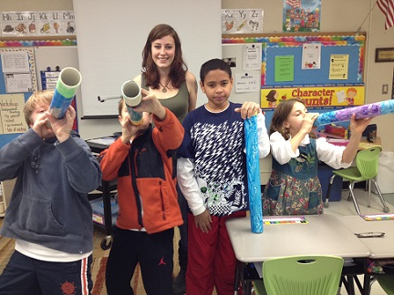

UVM Anthropology students are encouraged to build upon their coursework by taking advantage of additional opportunities tailored to their specific skills, interests, and goals.
Individually-assigned faculty advisors aid students in designing their independent paths and ANTH 105, a sophomore proseminar in Anthropology, focuses on skill-building, course selection, internships, service learning, research or teaching assistantships, study abroad, fieldwork, senior projects/theses, and grant opportunities.
The many opportunities our students pursue include:
